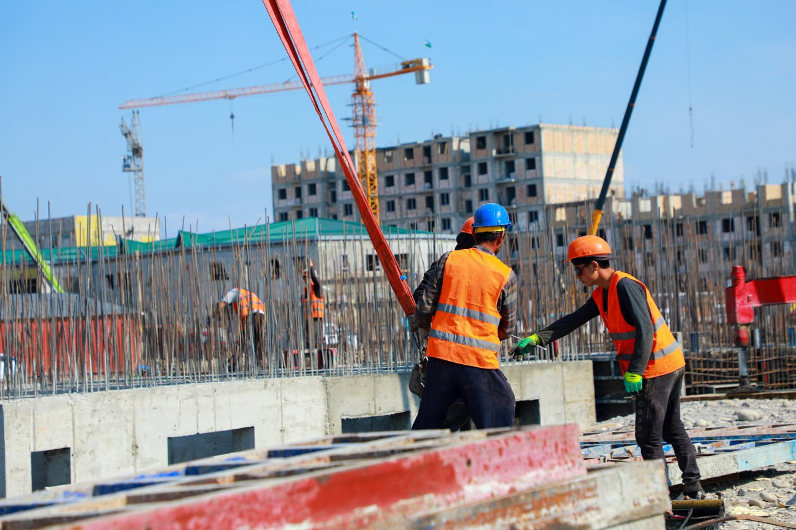

O‘zbekistonda 2026-yil fevral oyi holatiga ko‘ra, uy-joy kommunal xizmat ko‘rsatish va qurilish sohasidagi nazorat tadbirlari natijasida aniqlangan qonunbuzarliklar tizimli muammoga aylanganini ko‘rsatmoqda. Qurilish va uy-joy kommunal xo‘jaligi sohasida nazorat qilish inspeksiyasi tomonidan o‘tkazilgan keng ko‘lamli o‘rganishlar davomida 24 671 ta ko‘p kvartirali uyning texnik holati tahlil qilinganda, 7 mingga yaqin qonunbuzilish holatlari qayd etilgan. Ushbu kamchiliklarning asosiy qismi uylarning konstruktiv mustahkamligiga putur yetkazuvchi noqonuniy aralashuvlar, ya’ni tayanch devorlarni buzish, o‘zboshimchalik bilan qo‘shimcha xonalar qurish yoki umumiy foydalanishdagi maydonlarni (podyezd, podval, tom) egallab olish bilan bog‘liqdir. Aniqlangan 7 mingta holatdan 4 mingga yaqini tushuntirish ishlaridan so‘ng ixtiyoriy ravishda bartaraf etilgan bo‘lsa-da, 3 mingdan ortiq holat bo‘yicha ma’muriy jarimalar qo‘llanilgan va 2 mingga yaqin holat yuzasidan sudlarga da’vo arizalari kiritilgan.

2026-yilgi vaziyatning yana bir o‘ziga xos jihati shundaki, yangi qurilayotgan ko‘p qavatli uylarda ham jiddiy texnik nuqsonlar kuzatilmoqda; xususan, ayrim ob’ektlarda loyihada ko‘zda tutilgan mustahkamlovchi karkaslarning o‘lchamlari noto‘g‘ri qo‘yilishi yoki yong‘in xavfsizligi qoidalariga rioya qilinmasligi oqibatida qurilish ishlarini to‘xtatish va hatto sifatsiz qurilgan qismlarni buzib tashlash holatlari uchramoqda. Shu bilan birga, 2025-yilda qurilishi tugallangan 301 ta yangi uyning 142 tasida konstruktiv mustahkamlikni kuchaytirish zarurligi aniqlangani sohada sifat nazorati hali ham oqsayotganidan dalolat beradi. Mazkur muammolarni tizimli hal etish uchun 2026-yildan boshlab "Mening uyim" axborot tizimi orqali uylarning raqamli pasportini yuritish va barcha moliyaviy amallarni shaffoflashtirish choralari ko‘rilmoqda. Endilikda har bir uyning texnik holati "yashil", "sariq" va "qizil" toifalarga ajratilib, og‘ir ahvoldagi 10 mingta uyni bosqichma-bosqich ta’mirlash uchun 200 million dollargacha xalqaro investitsiyalar jalb qilinishi rejalashtirilgan. Shuningdek, 2026-yildan boshlab yangi uylarni foydalanishga qabul qilishda kadastr pasporti bilan birga quyosh panellarining mavjudligi va "Turar-joy" milliy tizimida avtomatik ro‘yxatdan o‘tishi shart qilib belgilandi, bu esa o‘zboshimchalik bilan qurilishlarni kamaytirishga xizmat qilishi kutilmoqda.